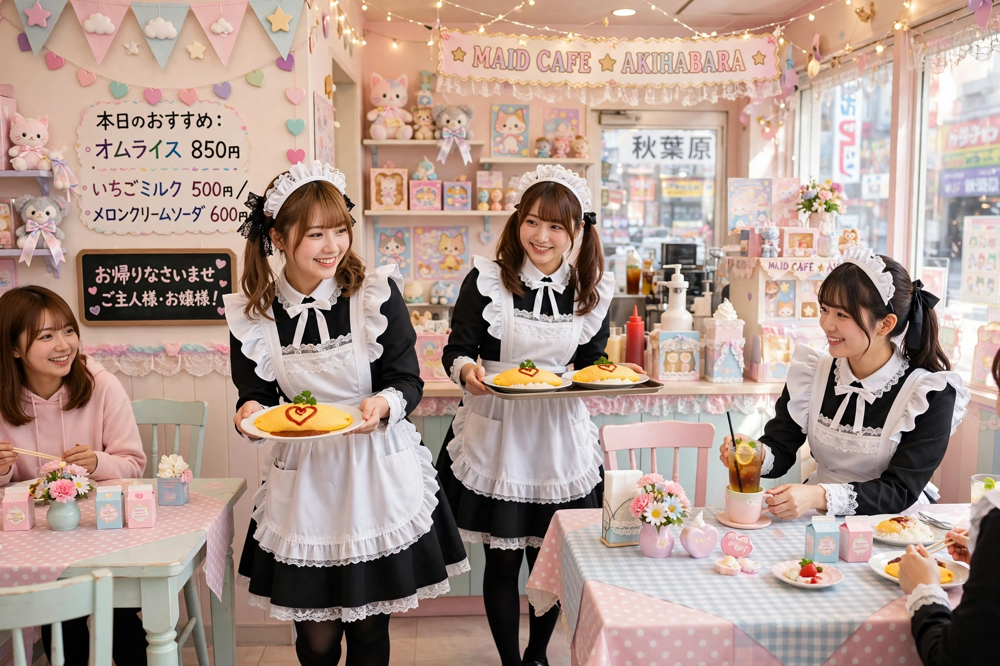

| Maid café | |
| Japanese | メイドカフェ (meido kafe) |
|---|---|
| Origin | Akihabara, Tokyo, Japan |
| First opened | Cure Maid Café, 2001 |
| Concept | Cosplay restaurant; waitresses in maid costumes serve customers as "masters" |
A maid café (Japanese: メイド喫茶 or メイドカフェ) is a type of cosplay restaurant found predominantly in Japan, in which the waitresses, dressed in French maid costumes, act as servants and treat customers as masters and mistresses of a private household rather than as café patrons. Maid cafés are a distinctive part of Japanese otaku culture and of the moe phenomenon, and are concentrated in Tokyo's Akihabara district.

The first permanent maid café, Cure Maid Café, opened in Akihabara in 2001, drawing on the popularity of maids in anime, manga and video games, and on earlier one-off maid café events held in the late 1990s. The format became a mass phenomenon in the mid-2000s; the @home café chain in Akihabara became its best-known exemplar, and maid cafés spread to other Japanese cities and abroad — to China, South Korea, Taiwan, Thailand, and to anime conventions and permanent cafés in North America and Europe.
Customers are greeted at the door with "Welcome home, master!" (Okaerinasaimase, goshujin-sama) and addressed as master or mistress throughout their visit. Beyond ordinary food and drink, cafés sell an interactive experience: maids draw pictures in ketchup on omelette rice (omurice) while chanting a "spell" to make the food delicious (moe moe kyun), play games such as rock-paper-scissors or Pop-Up Pirate with customers, take instant photographs (cheki) decorated by hand, and perform songs and dances on small stages. Many cafés charge a seating fee and operate strict rules, prohibiting customers from touching the maids, asking for their personal contact details, or taking unauthorised photographs.
Related formats include butler cafés, in which male staff (or cross-dressing female staff) serve as butlers; tsundere cafés, where staff act coldly towards customers; and themed variants based on shrine maidens, nurses or anime characters.
Cosplay · Akihabara · Butler café · Otaku